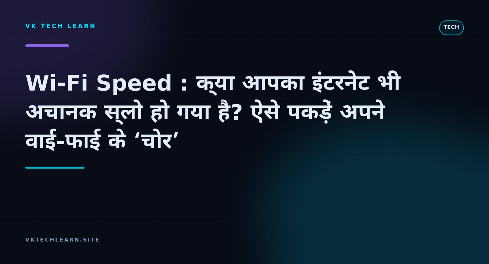

Wi-Fi Speed : क्या आपका इंटरनेट भी अचानक स्लो हो गया है? ऐसे पकड़ें अपने वाई-फाई के ‘चोर’
MERE NIYAMO PAR Wi-Fi Speed: क्या आपका इंटरनेट भी अचानक स्लो हो गया है? ऐसे पकड़ें अपने Wi-Fi के ‘चोर’
Wi-Fi Speed : फुल सिग्नल होने के बाद भी अगर वीडियो बार-बार बफर हो रहा है, Zoom या Teams कॉल अचानक कट रही है, और वर्क-फ्रॉम-होम के दौरान इंटरनेट आपको धोखा दे रहा है, तो सिर्फ खराब मौसम या कमजोर प्लान को दोष देना सही नहीं होगा। टेक एक्सपर्ट्स के मुताबिक, इसके पीछे एक बड़ा कारण आपके Wi-Fi से जुड़े ‘अनजान मेहमान’ हो सकते हैं।

जब कोई बिना आपकी अनुमति के आपका इंटरनेट इस्तेमाल करता है, तो आपकी बैंडविड्थ बंट जाती है। नतीजा यह होता है कि आपकी इंटरनेट स्पीड धीरे-धीरे गिरने लगती है, चाहे राउटर पर सिग्नल फुल क्यों न दिख रहे हों।
Wi-Fi Speed: कैसे पकड़ें अपने इंटरनेट का गलत इस्तेमाल करने वालों को?
अगर आपको लग रहा है कि आपका इंटरनेट जरूरत से ज्यादा स्लो हो गया है, तो घबराने की जरूरत नहीं है। कुछ आसान लेकिन टेक्निकल स्टेप्स फॉलो करके आप यह पता लगा सकते हैं कि कहीं कोई आपका Wi-Fi चोरी-छुपे तो इस्तेमाल नहीं कर रहा।
1. ट्रस्टेड डिवाइस की लिस्ट बनाएं
सबसे पहले अपने घर या ऑफिस के सभी डिवाइस जैसे मोबाइल, लैपटॉप, स्मार्ट टीवी, टैबलेट आदि की लिस्ट बना लें। हर डिवाइस का एक यूनिक MAC Address होता है, जिसे आप फोन या लैपटॉप की सेटिंग्स में जाकर देख सकते हैं।
2. राउटर में लॉग-इन करें
अपने मोबाइल या लैपटॉप के ब्राउज़र में राउटर का IP एड्रेस डालें। आमतौर पर यह 192.168.1.1 या 192.168.0.1 होता है। इसके बाद अपने राउटर के एडमिन यूज़रनेम और पासवर्ड से लॉग-इन करें।
3. Device List या DHCP Client List चेक करें
राउटर सेटिंग्स में जाकर Device List, Connected Devices या DHCP Client List ऑप्शन पर क्लिक करें। यहां आपको उन सभी डिवाइस की लिस्ट दिखेगी जो इस समय आपके Wi-Fi से जुड़े हुए हैं।
4. संदिग्ध डिवाइस को तुरंत ब्लॉक करें
अगर लिस्ट में कोई ऐसा डिवाइस या MAC Address दिखता है जो आपके घर या ऑफिस का नहीं है, तो समझ जाइए कि वही आपके इंटरनेट की स्पीड खा रहा है। ऐसे डिवाइस को तुरंत Block या Remove कर दें।
Wi-Fi Speed बढ़ाने के लिए प्रो-टिप: पासवर्ड जरूर बदलें
अगर आपको कोई अजनबी डिवाइस मिला है, तो सिर्फ उसे ब्लॉक करना काफी नहीं है। आपको अपना Wi-Fi पासवर्ड तुरंत बदलना चाहिए। एक्सपर्ट्स का कहना है कि पासवर्ड जितना मजबूत होगा, आपका नेटवर्क उतना ही सुरक्षित रहेगा।
एक मजबूत पासवर्ड में ये चीजें जरूर शामिल हों:
- Uppercase और Lowercase अक्षर
- नंबर्स (0-9)
- Special Characters (@, #, $, %)
कमजोर पासवर्ड न सिर्फ आपकी स्पीड कम करता है, बल्कि आपके पर्सनल डेटा के लिए भी खतरा बन सकता है।
“नेटवर्क सिक्योरिटी सिर्फ इंटरनेट स्पीड के लिए नहीं, बल्कि आपकी प्राइवेसी के लिए भी जरूरी है। कमजोर Wi-Fi नेटवर्क हैकर्स के लिए आपके पर्सनल डेटा तक पहुंचने का आसान रास्ता बन सकता है।”
— साइबर सिक्योरिटी एक्सपर्ट्स
अगला कदम: अपने Wi-Fi नेटवर्क को और सुरक्षित कैसे रखें?
अगर आप चाहते हैं कि भविष्य में आपकी Wi-Fi Speed कभी स्लो न हो, तो महीने में कम से कम एक बार अपना पासवर्ड जरूर बदलें। इसके अलावा, राउटर की सेटिंग्स में जाकर SSID Broadcast को डिसेबल किया जा सकता है, जिससे आपका Wi-Fi नेटवर्क आसपास के लोगों को आसानी से दिखाई नहीं देगा।
क्या आप जानते हैं कि राउटर की सही लोकेशन भी आपकी इंटरनेट स्पीड को लगभग 30% तक बेहतर कर सकती है? राउटर को घर के बीचों-बीच, ऊंची जगह और दीवारों से दूर रखने से सिग्नल बेहतर मिलता है।
अगर बार-बार इंटरनेट स्लो हो रहा है, तो यह संकेत है कि आपको अपने नेटवर्क की सिक्योरिटी पर ध्यान देने की जरूरत है। थोड़ी-सी सतर्कता आपको स्लो स्पीड, डेटा चोरी और अनचाहे झंझटों से बचा सकती है।